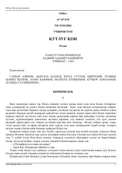

QQXX asr boshlaridagi o'zbek xalqining hayoti va kurashlari tasvirlangan klassik roman.
Ushbu roman XX asr boshlaridagi o'zbek xalqining og'ir ijtimoiy-iqtisodiy ahvoli va milliy uyg'onish davrini tasvirlaydi. Asar bosh qahramoni Yo'lchi orqali o'sha davrning ziddiyatli voqealari, boylar va kambag'allar o'rtasidagi munosabatlar hamda xalqning ozodlikka intilishi yoritib berilgan.